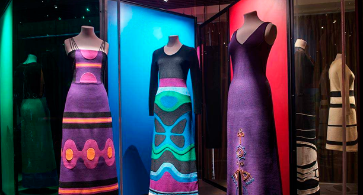
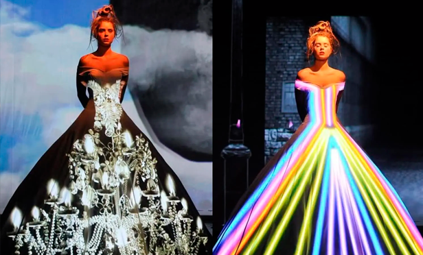
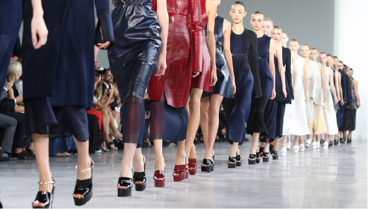

Bajo el liderazgo de IXEL MODA, el respaldo de la Alcaldía Distrital de Barranquilla y la Universidad Autónoma del Caribe, junto al sector gremial, empresarios e industriales, BARRANQUILLA prepara un GRAN EVENTO DE CIUDAD
Reposicionar a Barranquilla como “Cuna del Diseño” y lanzarla como “Capital de MODA ÉTICA” en Colombia
Brindarle al sector de la moda en la ciudad, una plataforma que le permita fomentar su capacidad creativa, su tejido empresarial y sus oportunidades de negocio en el mercado global.
Proporcionarle a la capital del Atlántico, una nueva herramienta para robustecer su apuesta por el turismo de eventos y negocios como motor de desarrollo y expansión de la “marca ciudad”.
Una noche para celebrar la moda; homenajear a sus protagonistas; resaltar el trabajo de las nuevas generaciones; y presentar un gran evento de ciudad.
…en un lugar mágico y emblemático, testigo del paso y evolución de la moda en Barranquilla
Primer momento
Alfombra roja
Segundo momento
Museo

RECORRIDO POR 100 AÑOS DE LA HISTORIA DE LA MODA EN BARRANQUILLA
HOMENAJE A SUS PROTAGONISTAS
industriales - empresarios - leyendas - íconos - figuras del nuevo milenio - diseñadores emergentes
Tercer momento
PALABRAS DE APERTURA RECONOCIMIENTOS
Cuarto momento
PASARELA LA NUEVA OLA DEL DISEÑO
30 años de academia